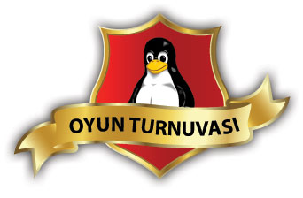
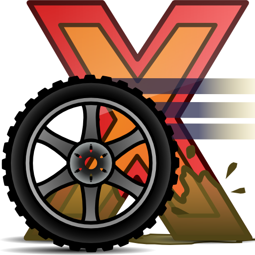
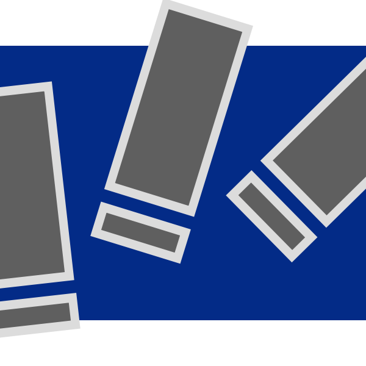
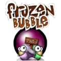

1) Hangi oyunlarla turnuva yapılacak, bu oyunların kuralları nasıl olacak ve hangi oyun ne zaman oynanacak?
| 17 Nisan Cuma - 12:00 / OpenArena İkili takımlar halinde team deathmatch, oynanacak, ilk elemeden sonra takım bakılmaksızın ikinci kez oynanacak ve finalde yine team deathmatch ile sıralama yapılacak. |
|
 |
17 Nisan Cuma - 15:00 / Hedgewars Başvuru adedine göre iki tur oynanacak şekilde aynı anda X kişi oynatılacak, ön elemeyi geçenler finalde yine aynı şekilde aynı anda oynayacak ve sıralama ona göre yapılacak. |
|  | 17 Nisan Cuma - Gün boyunca / X-Moto Belirlenen pistleri en kısa sürede tamamlayan başta olmak üzere sıralama yapılacak. Herkesin 3 kere deneme hakkı olacak, en iyi elde edilen puan geçerli sayılacak. Turnuva 15:00′te tamamlanıyor. |
| 17 Nisan Cuma - Gün boyunca / GnuJump Herkesin gün boyu oyunlarında 3 kere deneme hakkı olacak, en iyi derece geçerli sayılacak. En çok puanı alan en kısa sürede alan başta olmak üzere sıralanacak. Turnuva 15:00′te tamamlanıyor. |
|
|  | 18 Nisan Cumartesi - 12:00 / UrbanTerror İkili takımlar halinde team deathmatch, oynanacak, ilk elemeden sonra takım bakılmaksızın ikinci kez oynanacak ve finalde yine team deathmatch ile sıralama yapılacak. |
|  | 18 Nisan Cumartesi - 15:00 / Frozen Bubble Başvuru adedine göre iki tur oynanacak şekilde aynı anda x kişi oynatılacak, ön elemeyi geçenler finalde yine aynı şekilde aynı anda oynayacak ve sıralama ona göre yapılacak |
| 18 Nisan Cumartesi - Cumartesi / Mania Drive Belirlenen pistleri en kısa sürede tamamlayan başta olmak üzere sıralama yapılacak. Herkesin 3 kere deneme hakkı olacak, en iyi elde edilen puan geçerli sayılacak. Turnuva 15:00′te tamamlanıyor. |
2) Turnuva sonunda ödül verilecek mi?
Turnuva sonunda kazananlara kategorilerine göre ödül verilecektir. Ödüllerden bazıları: Adsl modemler, laptop çantaları, web kamerası, Linux ve programlama ile ilgili çeşitli kitaplar.
3) Turnuvaya kayıtlar nasıl alınacak ?
Sadece şenlik alanında alınacak, herkesin 1 oyuna 1 kere katılma hakkı olacak.
4) Ödüller ne zaman verilecek?
Her turnuva kendi içinde bittiği anda ödülleri veriyoruz.